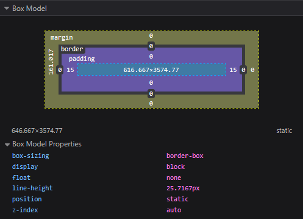
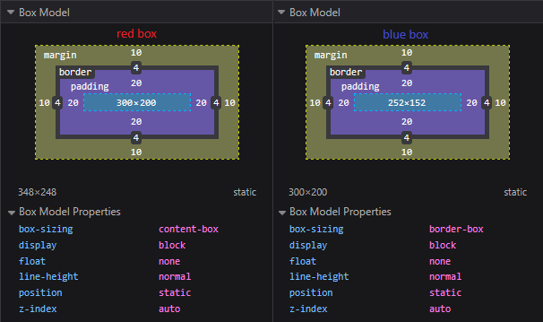

1. Working with CSS Transforms, Overflow and Filters#
1.1. What is overflow in CSS and how does it work?#
Overflow refers to the way elements handle content that exceeds or overflows the size of the containing element. For example, the text content of a div element can overflow out of its borders.
Overflow is two-dimensional, the x-axis determines horizontal overflow, and the y-axis determines vertical overflow.
Let’s fix the overflow on our example using the overflow-y CSS property. First we can hide the overflow entirely with hidden like this:
div {
overflow-y: hidden;
}
The result:
This resolves the overflow problem but now the extra content becomes completely unreachable. Instead we can use scroll to force the element to become scrollable:
div {
overflow-y: scroll;
}
Now this turns the container into a scrollable element, allowing all the content to be viewed by scrolling the element independently of the page scroll. We could also let the browser handle it on its own with auto value. It’s worth noting that vertical scrolling is generally considered okay while horizontal scrolling might be questioned as it’s generally not a common design decision.
With this knowledge, you can now control how your content overflows giving you more power over the layout of your pages.
1.2. What is the CSS transform property and how does it work?#
The CSS transform property is a powerful tool that allows you to modify the visual presentation of elements on your webpage without affecting the layout of other elements. It enables you to apply various transformations to elements such as rotating, scaling, skewing, or translating (moving) them in 2D or 3D space.
The transform property works by applying a mathematical transformation to an element’s coordinate system. This means you can manipulate an element’s shape and position while keeping it’s original place and document flow intact.
Let’s explore some common transform functions. Here’s an example of a box element:
body {
border: 2px solid black;
}
.box {
width: 200px;
height: 200px;
background-color: red;
}
We have set the body to have a solid black border so that you can see the .box element nested inside the body element.
The
translatefunction moves an element from its current position. Here’s an updated example using thetranslatefunction:body { border: 2px solid black; } .box { width: 200px; height: 200px; background-color: red; transform: translate(50px, 100px); }
This CSS rule will move the element with the class
box50 pixels to the right and 100 pixels down from its original position.The
rotatefunction rotates an element around a fixed point and this is an example of using therotatefunction for the.boxelement from earlier:.box { margin: 100px; width: 200px; height: 200px; background-color: red; transform: rotate(45deg); }
This will rotate the element forty five degrees clockwise.
The
scalefunction allows you to change the size of an element. Here’s an example:.box { margin: 100px; width: 200px; height: 200px; background-color: red; transform: scale(1.5, 2); }
This will make the element one and a half times wider and twice as tall as its original size.
You can combine multiple transformations in a single declaration:
.box {
margin: 100px;
width: 200px;
height: 200px;
background-color: red;
transform: translate(50px, 50px) rotate(45deg) scale(1.5);
}
This will move the element 50 pixels to the right and down, rotate it 45 degrees, and scale it to be one and a half times its original size.
While the transform property is powerful for creating visually appealing designs, it’s important to consider accessibility when using it. Here are some important accessibility concerns to keep in mind.
Screen readers may not accurately convey transformed content. For example, if you use
transformto rearrange the visual order of elements, screen readers will still read the content in the original DOM order. This can lead to confusion for users relying on screen readers.When using
scaleto resize text be cautious not to make it too small or too large. Extremely small text can be difficult to read while overly large text might overflow its container and become unreadable. It’s generally better to use proper font styling techniques for text resizing.If you are using
transformfor animations effects, be mindful of users who are sensitive to motion. Excessive or rapid animations can cause discomfort or even trigger seizures for some people. Consider providing a way for users to reduce or turn off animations. When using 3D transforms, remember that not all users perceive depth in the same way. Ensure any critical information conveyed through 3D effects is also available in a 2D format or through text.If you are using
transformto hide or reveal content, make sure the content is still accessible to screen readers and keyboard navigation. Hidden content should be truly hidden such as by usingdisplay: none;orvisibility: hidden;, rather than just being visually moved offscreen.When applying
transformto interactive elements like buttons or links, ensure that the clickable area remains intuitive and easily targetable. A drastically transformed button might be visually confusing or difficult to click especially for users with motor impairments.
In conclusion, while the CSS transform property is a powerful for creating visually dynamic web designs, it’s essential to use it responsibly with accessibility in mind. Always test your transformed elements with various assisted technologies and consider providing alternative ways to access information or functionality that might be affected by transforms.
1.3. What is the CSS box model and how does it work?#
The CSS box model is a fundamental concept for web development. It defines how HTML elements are structured and positioned. If you understand this model you will be able to control the size, spacing and appearance of the elements on your website.
In the CSS box model, every element is surrounded by a box. This box consists of four elements: the content area, the padding, the border, and the margin.

The content area is the innermost part of the box. It’s the space that contains the actual content of an element like text or images.
The padding is the area immediately after the content area. It’s the space between the content area and the border of an element. With the padding you can add space around the content to improve it’s readability. You can set different values for the top, right, bottom and left padding with the
paddingproperty.This is an example with the
paddingshorthand property, where we set the top padding to fifteen pixels, the left padding to five pixels, the bottom padding to two pixels and the left padding to eight pixels:padding: 15px 5px 2px 8px;
Where we set the top padding to fifteen pixels, the left padding to five pixels, the bottom padding to two pixels and the left padding to eight pixels.
The border is the outer edge or outline of an element in the CSS box model. It’s the visual boundary of the element. You can customize the border style, width, color and other properties using the
borderproperty. Here’s an example where we set the border to a width of five pixels, a solid state and a color of blue:border: 5px solid blue;
If you omit a value the default property of that value will be used. That’s
mediumfor the width,nonefor the style and the current color for the color.You can set this three properties directly in the shorthand
borderproperty if you want all sides to be exactly the same. But if you want to assign a different style to each side you can use theborder-width,border-styleandborder-colorproperties.border-width: 2px 4px 7px 12px; border-style: dashed solid solid dashed; border-color: blue red green black;
You can write up the four values for each one of these properties. They will be applied in a clockwise sequence starting from the top. If you only write one value it will be applied to all four sides.
Finally, the margin is the space outside the border of an element. It determines the distance between an element and other elements around it. You can set different margin values for the top, right, bottom and left sides of the element using the
marginproperty.So in this example the top margin is three pixels, the right margin is twelve pixels, the bottom margin is nine pixels and the left margin is seven pixels:
margin: 3px 12px 9px 7px;
These four components are essential for calculating the total width and height of an element.
1.4. What is margin collapsing and how does it work?#
This behavior occurs when the vertical margins of adjacent elements overlap, resulting in a single margin equal to the larger of the two.
Understanding margin collapsing is important for precise control over spacing and layout in web design. So, let’s get into how margin collapsing works and explore some common scenarios where it occurs.
In CSS when two vertical margins come into contact with each other they’ll collapse, this means that instead of adding together the larger margin wins and determines the space between the elements.
This behavior applies only to vertical margins top and bottom and not horizontal margins, not the left and right.
So, here’s an example to illustrate this concept on thwo adjacent siblings:
<style> .box1 { margin-bottom: 20px; background-color: lightblue; } .box2 { margin-top: 30px; background-color: lightgreen; } </style> <div class="box1">Box 1</div> <div class="box2">Box 2</div>
In this example, you might expect the total space between
.box1and.box2to be 50 pixels (20 pixels plus 30 pixels). However, due to margin collapsing the actual space will be 30 pixels, which is the larger of the two margins.As we saw in the previous examples, margins of the adjacent sibling elements will collapse. This is the most straight forward case of margin collapsing. Let’s explore more cases where margin collapsing can occur.
Margins can also collapse between a parent element and its first or last child. If there’s no border, padding, inline content, or clearance to separate the parent’s margin from the child’s, they will collapse.
<style> .parent { margin-top: 40px; background-color: lightyellow; } .child { margin-top: 30px; background-color: lightpink; } </style> <div class="parent"> <div class="child">Child element</div> </div>
In this case you might expect the child to be 70 pixels from the top (40 pixels plus 30 pixels). However, the margins collapse and the larger margin 40 pixels is used.
If an element has no content, padding, or border, its top and bottom margins can collapse into a single margin.
<style> .empty-block { margin-top: 20px; margin-bottom: 10px; height: 0; } .next-block { background-color: lightgray; } </style> <div class="empty-block"></div> <div class="next-block">Next block</div>
In this example the
empty-blocks top and bottom margins collapse into a single 30 pixels margin, the larger of the two.Here’s another example of preventing collapse using padding:
<style> .parent { margin-top: 40px; padding-top: 1px; background-color: lightyellow; } .child { margin-top: 30px; background-color: lightpink; } </style> <div class="parent"> <div class="child">Child element</div> </div>
In this case the one pixel padding on the parent prevents the margin from collapsing resulting in a total space of 71 pixels from the top of the parent to the top of the child content.
Understanding margin collapsing is important for precise control over layout and spacing in CSS. While it can sometimes lead to unexpected results, it’s a feature designed to create more aesthetic and consistent spacing in documents. By knowing when margin collapsing occurs and how to prevent it when necessary, you can create more predictable and maintainable layouts in your web designs.
1.5. What is the difference between content-box and border-box in CSS?#
The box-sizing property can be set to either content-box or border-box to control how the width and height of elements are calculated. Here you can see the box-sizing property and the two possible values:
box-sizing: content-box;
box-sizing: border-box;
This property can be set on the universal selector (*) to apply to all the elements in the document:
* {
box-sizing: border-box;
}
The value of the box-sizing property is content-box by default, but you can choose border-box if you need to. We will explore content-box first and then we will go into border-box.
To understand how this models work, you need to be familiar with the four core concepts from the CSS box model. Let’s review them quickly. The content area is the space occupied by the element’s content. The padding is the space between the content area and the border. The border is the outline that surrounds the content area and the padding. The margin is the space outside the border that separates the element from other elements.
In the
content-boxmodel, the width and height that you set for an element determines the dimensions of the content area but they don’t include the padding, border or margin. You should usecontent-boxwhen you need to have precise control over the dimensions of the content area. So, when you set the width and height of an element withwidthandheightproperties, you are only setting the dimensions of the content area.widthis the width of the content,heightis the height of the content.To find the total width of the element, what you will really see on the screen, you will still need to add the left and right padding, and the left and right borders.
So, the total width equals the total width plus the padding left, plus padding right, plus border left, plus border right.
Likewise, the total height of an element can be found by adding the content height, the top and bottom border padding, and the top and bottom borders.
So, the total height equals the content height plus padding top, plus padding bottom, plus border top, plus border bottom.
For example, here we have a CSS type selector for all the
divelements.div { width: 300px; height: 200px; padding: 20px; border: 4px solid black; }
In this case, if
content-boxis used the content area will have a width of 300 pixels and a height of 200 pixels. However, the total width, what you will see on the screen, will be the result of adding the width of the content area, which is 300 pixels, plus the padding on both sides (40 pixels), and the borders on both sides (8 pixels).Likewise, the total height will be the result of adding the height of the content area (200 pixels), plus the top and bottom padding (40 pixels), plus the top and bottom borders (8 pixels).
Now let’s explore
border-box. They are a bit different, withborder-boxthe width and height of an element include the content area, the padding, and the border, but they don’t include the margin. You should useborder-boxwhen you need to keep a fixed element size regardless of changes in padding or borders. It’s also helpful for responsive web design since the content area will adjust automatically to fit the dimensions.The padding and border are inside the box, so when you set the
widthandheightproperties of an element, you’re really setting the width and height of the inner part of the box. Here’s ourdivexample with the same properties and values that we had before:div { width: 300px; height: 200px; padding: 20px; border: 4px solid black; }
With
border-boxthe value of thewidthproperty will be the result of adding the width of the content area, the left and right padding, and the left and right border.So, the width equals the width of the content, plus the left padding, plus the right padding, plus the left border, plus the right border.
Likewise, the value of the
heightproperty is the result of adding the height of the content area, the top and bottom padding, and the top and bottom border.Height equals the height of the content, plus top padding, plus bottom padding, plus top border, plus bottom border. The margin is not included in the width or height.
If you check the size of the div in the browser using the content-box and border-box you will notice that there’s a very important difference. These are the two divs in HTML:
<div id="red-div"></div>
<div id="blue-div"></div>
We assign them ids to select them individually in CSS. These are the CSS rules for the #red-div and the #blue-div:
#red-div {
box-sizing: content-box;
width: 300px;
height: 200px;
padding: 20px;
border: 4px solid black;
margin: 10px;
background-color: red;
}
#blue-div {
box-sizing: border-box;
width: 300px;
height: 200px;
padding: 20px;
border: 4px solid black;
margin: 10px;
background-color: blue;
}
You can see that they both have the same width, height, padding, border and margin. The only differences are the colors and the value of the box-sizing property. This small difference has a very important impact on the final dimensions.

Choosing between content-box and border-box really depends on the specific needs of your project. While border-box is becoming increasingly popular for its simplicity and flexibility, understanding both models is important for implementing effective CSS layouts.
1.6. What is a CSS reset and what are some common examples?#
A CSS reset is a stylesheet that removes all or some of the default formatting that web browsers apply to HTML elements. For example, you might have noticed that certain elements, like paragraphs and headings, already have margins by default even if you don’t define them explicitly in your custom stylesheets.
You will also see this with various properties in a wide range of HTML elements. Different browsers may also apply different default styles to HTML elements. The default styles in Google Chrome may not be exactly the same as in Mozilla Firefox or Microsoft Edge. This can result in inconsistent styles across browsers which you should avoid as much as possible.
To handle this, a CSS reset removes the default styles. By removing all or some of the default styles, you can get a consistent baseline for your design and minimize the potential inconsistencies across browsers and devices. Removing default styles can also make the styling process easier because you will only see the styles that you have applied explicitly in your custom stylesheets. There are two main approaches to CSS resets: you can either define custom CSS resets or use third-party CSS resets.
Custom CSS resets are stylesheets that you create from scratch to fit the need of your project. This way you can control the specific styles that will be reset with a lot of room for flexibility. However, you also need to invest time to develop and maintain the stylesheets. Here’s an example of a very common CSS rule for resetting the margin and padding of all HTML elements:
* { margin: 0; padding: 0; }
It’s usually written at the top of the CSS stylesheet. The asterisk star selector is a wildcard selector that matches all HTML elements, so they will have a default margin of zero and a default padding of zero on all four sides. This will give you a starting point and then you can customize them in more specific CSS selectors further down in the stylesheet.
You can use this approach to select any HTML element and reset its default styles, just create a custom stylesheet and use the appropriate CSS selectors to match the elements and set the styles.
But this can be a time intensive process. If you want to save time you can also use a third-party CSS reset. These stylesheets are already pre-built so you can just download them and add them to your project directly.
A great example of a third-party CSS reset is
Normalize.css. This stylesheet normalizes styles for a wide range of HTML elements while still keeping some useful default styles especially those that are important for accessibility. It also corrects bugs and style inconsistencies.Another option is
sanitize.css. This is a CSS library that you can use to ensure that default styles will be consistent across all major modern browsers. This library is developed alongsideNormalize.cssso they evolve together. It also has individual stylesheets that you can download for specific purposes like normalizing forms and typography.
There are many options available but you should choose the ones that best fit the needs of your project. You can also combine both approaches using third-party CSS resets with custom resets.
When working with CSS resets, it’s also important to take accessibility into account. Your web application should be accessible to everyone. So, you shouldn’t reset styles that might be helpful for screen readers or other assistive technologies. You should also consider the impact that these additional stylesheets may have on your applications performance, because they have to be downloaded before the custom styles are applied.
By removing the default styles, CSS resets give you a blank starting point to implement your design. This results in a more uniform and consistent user experience across browsers and across devices.
1.7. What is the CSS filter property and what are common examples?#
The CSS filter property is a powerful tool that allows you to apply graphical effects to elements on a web page. It’s particularly useful for adjusting the visual presentation of images, backgrounds and even text without modifying the original asset.
The filter property can be used to create various effects, such as blurring, color shifting, and contrast adjustments. Let’s discuss how the filter property works and explore some common examples. The basic syntax for a filter property is straightforward:
selector {
filter: function(amount);
}
Here function represents the specific filter effect you want to apply, and amount is typically a value that determines the intensity of the effect. Now let’s look at some common filter functions and their uses.
The
blurfunction applies a gaussian blur to the element, the amount is specified in pixels and represents the radius of the blur. This CSS rule will apply a 5 pixel blur to all images on the page. Theblureffect can be useful for creating depth in your design or for obscuring parts of an image.img { filter: blur(5px); }
The
brightnessfunction adjusts the brightness of the element. A value of0%will make the element completely black, while values over100%will increase the brightness..bright-image { filter: brightness(150%); }
This CSS rule increases the brightness of elements with the class
bright-imageby50%. Brightness adjustments can be used to make images pop or create a washed-out effect.The
grayscalefunction converts the element to grayscale. The amount is defined as a percentage, where100%is completely grayscale and0%leaves the image unchanged..gray-image { filter: grayscale(100%); }
This rule will convert elements with the class
gray-imageto complete grayscale.grayscalecan be used to create a vintage look or de-emphasize certain elements on a page.The
sepiafunction applies a sepia tone to the element. Like grayscale, it uses a percentage value:.old-photo { filter: sepia(80%); }
This rule applies an
80%sepia effect to elements with the classold-photo. The sepia effect is great for creating a vintage or old-timey look.The
hue-rotatefunction applies the hue rotation to the element. The value is defined in degrees, and represents a rotation around the color circle..color-shift { filter: hue-rotate(90deg); }
This rule rotates the hue of elements with the class
color-shiftby90degrees. Hue rotation can be used to create psychedelic effects or to adjust the overall color scheme of an image.
One of the most powerful aspects of the filter property is the ability to combine multiple effects. You can apply several filters to the same element by separating them with spaces:
.multi-filter {
filter: contrast(150%) brightness(110%) sepia(30%);
}
This rule applies increased contrast, slightly increased brightness, and a subtle sepia effect to elements with the class multi-filter.
By combining filters you can create complex and unique visual effects tailored to your design needs. The CSS filter property is a versatile tool that allows for creative visual manipulation of web elements.
While we have covered some of the most common filter functions, there are others available, such as contrast, invert, and saturate. As with any powerful feature, it’s important to kind of be careful with how you use the filters to enhance your design without overwhelming your users or compromising accessibility.